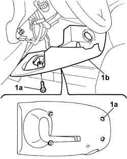
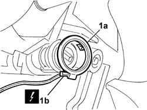

5580E08 aerial for alpha code - r r
- Path
- Procedures > 55 ELECTRICAL EQUIPMENT > 5580 SPECIAL ACCESSORIES > 5580E anti-theft device > 5580E08 aerial for alpha code - r r
- Kind
- repair procedure (removal / refitting; the operation number is the code)
- Applies to
- all engines; all production periods
- Interactive page
- https://sloeber94.github.io/elrnDB-fDbl/en/#/2584975
Applies to: all engines; all production periods
 Removing
Removing
 Refitting
RefittingDisconnect the battery negative terminal.
1. Undo the bolts (1a) and remove the steering column bottom trim (1b).

Applies to: all engines; all production periods
1. Remove the aerial (1a) from the ignition switch and disconnect the electrical connector (1b).
 | Name | Connector |
|---|---|---|
1b | Aerial for Fiat-CODE |

Applies to: all engines; all production periods
Refitting
RemovingFit the ignition switch aerial and connect the electrical connector.
| Name | Connector |
|---|---|---|
- | Aerial for Fiat-CODE |
Fit the steering column bottom trim and secure it with the bolts.
Connect the battery negative terminal.